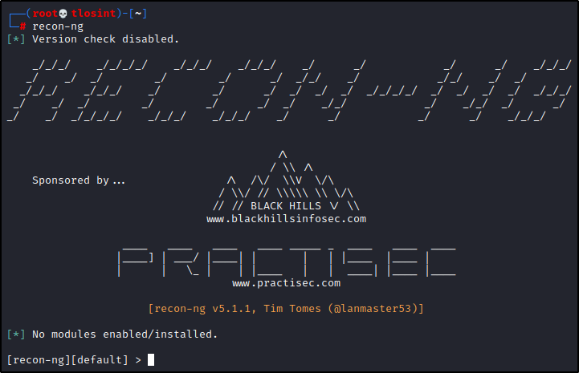
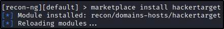
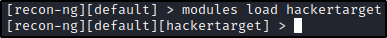

You can execute the command, and will prompt a command line framework:

We can use the "marketplace search" command to search for modules!

We can install and load the "hackertarget" module:


Now, we can use the "info" option to know more about the module:

We can set the "SOURCE" option:
It needs a domain

To run a module, just use the "run" command:

We can see the hosts saved with "show hosts" command:

Now we can go back and install the "profiler" module:

We can load it and see some info:

It is litteraly the WhatsMyWebsite tool!
You can set a SOURCE value (an username) and see what it gets!

Now we can run it and see some results:
Once done, we can look at profiles with "show profiles"